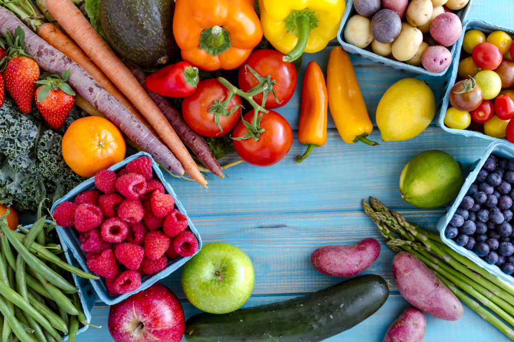
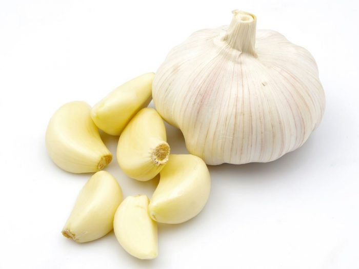

Legume crude vs legume gătite – Care îşi păstrează mai bine vitaminele?

Regimul alimentar care include legume proaspete este esenţial pentru o sănătate de fier, ferită de boli
şi lipsa de energie specifică persoanelor modern.
Însă, pentru a beneficia la maximum de proprietăţile energizante ale acestor alimente, trebuie să ştim
cum să le consumăm, deoarece unele legume sunt mai sănătoase atunci când sunt gătite, iar altele trebuie
mâncate în stare proaspătă pentru a profita de toate substanţele nutritive necesare organismului.
Usturoiul

Usturoiul se mănâncă întotdeauna crud. Acesta conţine substanţe cu rol de relaxare a vaselor de sânge,
ajutând astfel la prevenirea bolilor de inimă. Atunci când usturoiul este gătit, indiferent de temperatură
sau modul de preparare, aceste substanţe dispar, iar noi nu mai beneficiem de efectele lor pozitive asupra
organismului.
Pentru o aromă mai intensă, striveşte un căţel de usturoi în dressing-ul pentru salată, adaugă-l la final în
sosul de roşii sau pur şi simplu amestecă-l cu un strop de ulei de măsline şi întinde-l pe o felie de pâine
integrală.
Este delicios, dar ne şi stimulează în mod natural producţia de anticorpi a organismului, protejându-ne de
răceli, are proprietăţi de reglare a tensiunii arteriale, ferindu-ne astfel de infarct şi accident vascular
cerebral, este util persoanelor care suferă de probleme digestive şi ne ajută să slăbim datorită faptului că
ajută la reducerea nivelului de colesterol şi la eliminarea toxinelor din corp.
Morcovul
Morcovii – sunt delicioşi atunci când sunt ronţăiţi în stare crudă, însă atunci când sunt gătiţi eliberează
şi mai multă cantitate de betacaroten, un precursor al vitaminei A, cu rol de menţinere a integrităţii
celulelor şi ţesuturilor şi de blocare a proceselor oxidative dăunătoare din organism.
Sparanghelul
Sparanghelul în stare proaspătă îşi păstrează cel mai bine proprietăţile. Este o legumă plină de deja celebrii
antioxidanţi cu efect protector asupra celulelor organismului. Prin neutralizarea efectului nociv al radicalilor
liberi, menţin un nivel optim de acid folic, cunoscută şi sub denumirea de vitamina B esenţială care contribuie
la sănătatea creierului.
Este supranumită şi "planta care vindecă 100 de boli" şi nu se dezice de acest titlu. Printre efectele sale
benefice putem enumera: creşterea fertilităţii feminine şi masculine, echilibrarea nivelului hormonal, reglarea
hiperacidităţii gastrice, proprietăţi antiinflamatoare, afrodiziace, laxative, diuretice, anticancerigene etc.
Este ideal pentru ronţăială, în locul chips-urilor sau crănţănelelor pline de sare şi grăsimi. Spălaţi-l,
tăiaţi-i capetele şi… start la ronţăit sănătate!
Broccoliul
Broccoli se recomandă a fi consumat în stare crudă deoarece astfel pot fi absorbite mai eficient în corp
elementele cu proprietăţi antitumorale din legumă. Compusul fitochimic cu rol de prevenire a tumorilor
canceroase poartă denumirea de sulforafan şi are acţiune directă asupra bacteriei Helicobacter pylori, care
cauzează diverse afecţiuni gastrice.
De asemenea, broccoli consumat în stare crudă contribuie la eliminarea toxinelor din ficat şi are efct
detoxifiant, fiind un aliat de nădejde al persoanelor aflate la dietă: la 100 de grame, broccoli are aproximativ
24 de calorii.
Pentru cei care nu vor sau nu pot să consume broccoli în stare crudă şi vor să beneficieze totuşi de vitaminele
şi nutrienţii din această legumă, este indicată fierberea timp de 5 minute în vapori sau maximum 10 minute în
apă clocotită.
Ardeiul gras roşu
Ardeiul gras roşu este cel mai sănătos în stare crudă. Este o legumă bogată în vitamina C, care este un nutrient
esenţial vieţii, solubil în apă. Prin călirea sau fierberea ardeilor, toate vitaminele sunt pierdute. Dacă îi
adăugaţi în ciorbe este perfect pentru că nutrienţii vor fi transferaţi în apă, însă la tocăniţe sau alte
preparate, toate aceste beneficii se duc pe apa Sâmbetei, în niciun caz în corpul nostru.
Dacă până acum am enumerat câteva legume care trebuie consumate în starea lor naturală, iată că a venit vremea
să expunem şi cealaltă categorie, respectiv legumele gătite, care sunt mai sănătoase preparate astfel.
Spanacul
 Spanacul – trebuie călit, fiert sau făcut la abur pentru că astfel este uşurată absorbţia de calciu, mineral
conţinut din belşug de această legumă, care ajută la menţinerea unui sistem osos puternic.
Spanacul – trebuie călit, fiert sau făcut la abur pentru că astfel este uşurată absorbţia de calciu, mineral
conţinut din belşug de această legumă, care ajută la menţinerea unui sistem osos puternic.
Ceapa
Ceapa – contrar zvonurilor, ceapa prăjită, sotată sau fiartă este mult mai sănătoasă decât ceapa în starea ei
proaspătă deoarece flavonoidele din ea cresc odată cu temperatura la care este gătită. Ceapa conţine quercitină,
compus cu proprietăţi antiinflamatorii, iar sortimentele de ceapă roşie şi galbenă sunt cele mai bogate în
aceste substanţe.
Aveţi grijă însă să nu ardeţi ceapa, maximum 5 minute sunt suficiente pentru călirea acesteia, altfel îşi pierde
de tot efectele benefice.